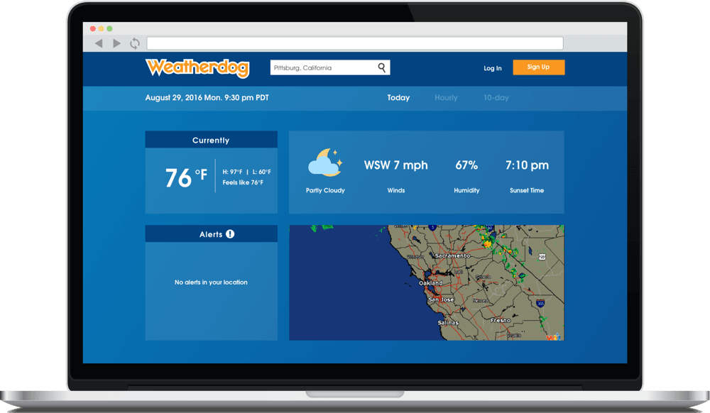
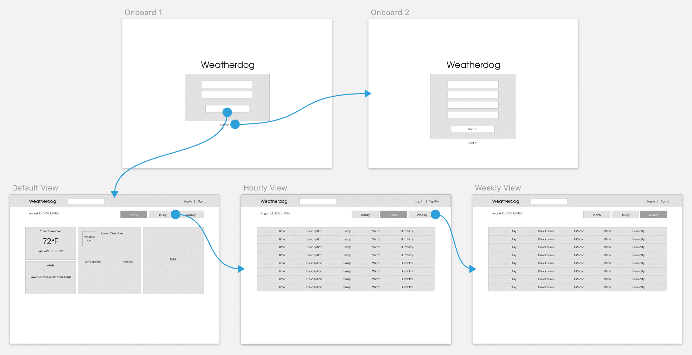
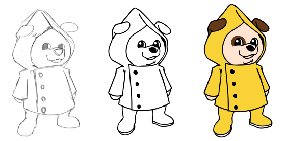
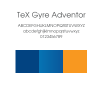
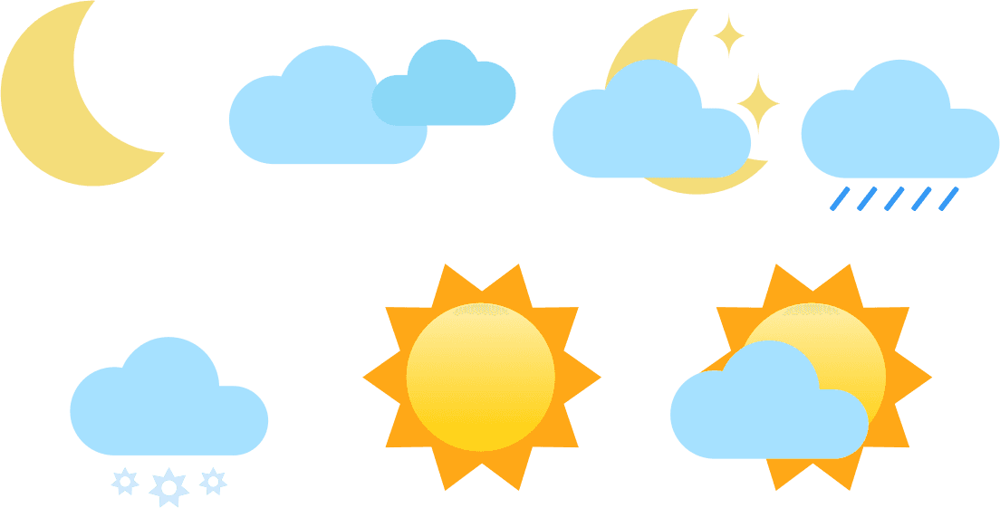
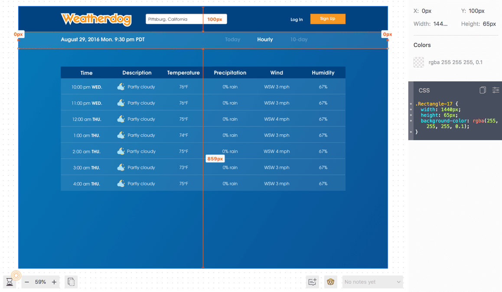
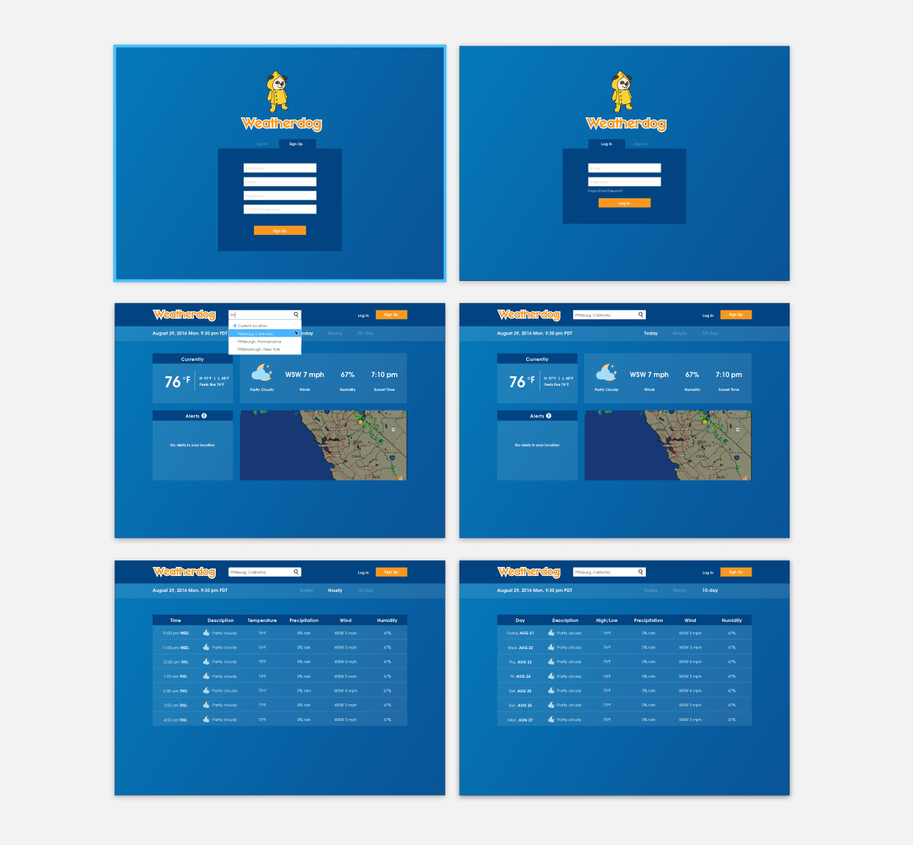

Weatherdog Website

A colleague reached out to me and recruited my help to design a weather website. The idea came about because it was hurricane season at the time and we felt strongly about creating a service that provides detailed weather information and warnings locally. The website would be serviced by the Wunderground API and would only be for desktop.
At the minimum, the product would display forecast events and possible hazardous information. Visitors of the service can use the searchbar to find the forecast for any location in the world (depending on the Wunderground API). Along the way, we started thinking about how many days we should provide for the forecast and what other types of information we should show.
To ensure that we were putting forth information that was insightful to users, I spoke to several people about their experience with various weather apps. I asked them give me one or two things they care most about when it comes to weather forecasts. The most common answers were that people wanted a daily temperature forecast and detailed information about winds or precipitation.
We spent some time looking at several different weather applications, desktop and mobile. This helped us identify certain patterns amongst these services that people tend to care most about.
I shared my findings through the form of wireframes in which I communicated the idea of having several KPIs on the homepage and the ability to switch between the current weather information. The Wunderground API provides a ton of data, but we didn't want to abuse it by loading a lot of information just because we can.
Mockup showing the onboarding flow and different dashboard views
We compared the wireframe to the data available in the Wunderground API. The API provides several different map widgets, and the one that we liked was a larger map than what I had anticipated. I reflected the minor changes in the high fidelity versions of the design. Also, we decided to switch the weekly view to a 10-day view because we thought by having a little bit more information displayed might be more useful.
We felt blue would be a good color to use for the brand. We also chose orange as our secondary color because it paired well. I illustrated several icons to match with the Wunderland API weather descriptions, focusing on a flat, simple design. As for the Weatherdog mascot, I sketched out a few versions. The final design features a cartoon dog wearing a traditional yellow raincoat.
The use of yellow was inspired by the Morton Salt girl
  Sample screen of the Zeplin file used for collaboration
The live site was shown to a handful of people. Visitors made positive remarks about the simplicity of the design and how succinct the information is presented. The most challenging part of this side project was not foreseeing all of the pixel movement during responsiveness, although it's only meant to be used on the desktop. It was definitely more clear once it made it to development resulting in me changing the design a bit.
After a few years, we stopped paying for the service to be hosted on Amazon Web Services, so now it sits in a Github repository. However, once I have more free time, I plan to revisit this project to further expand on the service.